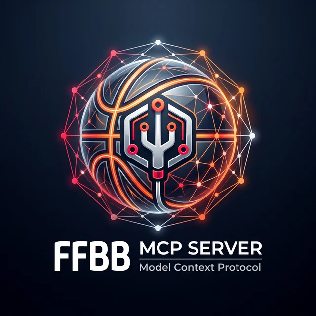

Bilan complet
Obtenez le bilan complet d'une équipe toutes phases confondues par son nom ou son ID en un seul appel.

Connectez vos agents Claude, Cursor ou ChatGPT aux données live de la FFBB via le serveur MCP le plus performant.
Obtenez le bilan complet d'une équipe toutes phases confondues par son nom ou son ID en un seul appel.
Recherchez n'importe quel club, salle, compétition ou terrain avec une tolérance aux erreurs de frappe.
Accédez aux scores en direct des matchs en cours pour ne rien rater de l'action FFBB.
Planifiez l'avenir en récupérant instantanément le prochain rendez-vous d'une équipe précise.
Visualisez les classements complets et les détails des poules pour une analyse approfondie.
Conçu avec FastMCP pour une intégration native et ultra-rapide avec l'écosystème Model Context Protocol.
Choisissez votre client MCP favori et copiez la configuration.
// Ajoutez dans claude_desktop_config.json
{
"mcpServers": {
"ffbb": {
"httpUrl": "https://ffbb.desimone.fr/mcp"
}
}
}# Installation automatique via Smithery CLI
npx -y @smithery/cli@latest install @nickdesi/mcpffbb \
--client claude \
--mcp-url https://ffbb.desimone.fr/mcp// Cursor / VS Code — type : Streamable HTTP
{
"mcpServers": {
"ffbb": {
"type": "http",
"url": "https://ffbb.desimone.fr/mcp"
}
}
}Les réponses aux questions les plus courantes sur le serveur et la data.
Il suffit de configurer FFBB MCP Server dans votre client (Claude, Cursor, etc.)
avec l'URL https://ffbb.desimone.fr/mcp. L'agent utilisera automatiquement
l'intelligence métier intégrée pour comprendre les catégories, rechercher les clubs et récupérer
les plannings et classements sans effort supplémentaire.
Si l'agent échoue avec un nom générique, utilisez un mot-clé précis (ex: "Vichy"). L'outil
ffbb_search est tolérant aux fautes de frappe et aux cas complexes, incluant les
noms avec des apostrophes (ex: "Jeanne d'Arc") ou les équipes uniques sans numéro apparent
impliqué (ex: "U11M" devient automatiquement "U11M1").
Totalement. Une stratégie de cache dynamique est implémentée pour garantir une fraîcheur maximale (15 secondes de TTL) lors des périodes de matchs Live, garantissant des scores de basket en temps réel, tout en préservant l'API officielle hors saison.